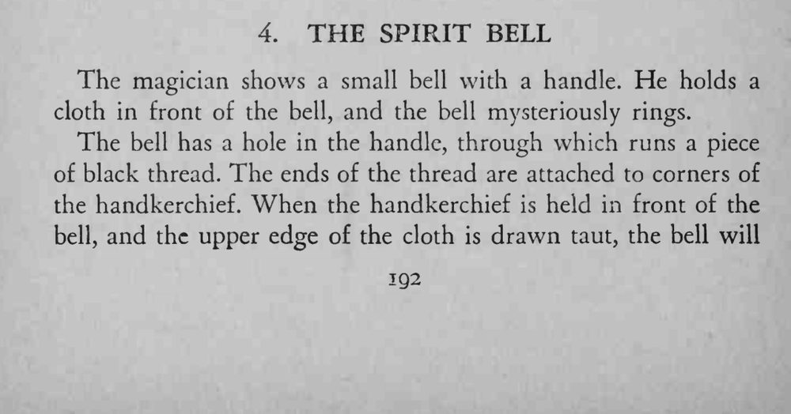
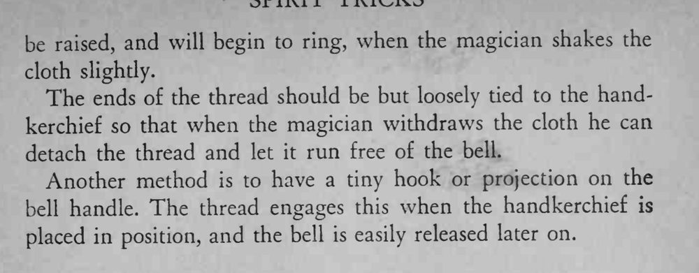

魔术师把一块布举在铃铛前面，铃铛竟自己响了起来，布后却什么也看不见。
线要细、系得松，收手帕时顺势解脱；也可在铃柄上做个小钩来挂线。


The magician shows a small bell with a handle. He holds a cloth in front of the bell, and the bell mysteriously rings. The bell has a hole in the handle, through which runs a piece of black thread. The ends of the thread are attached to corners of the handkerchief. When the handkerchief is held in front of the bell, and the upper edge of the cloth is drawn taut, the bell will be raised, and will begin to ring, when the magician shakes the cloth slighdy. The ends of the thread should be but loosely tied to the handkerchief so that when the magician withdraws the cloth he can detach the thread and let it run free of the bell. Another method is to have a tiny hook or projection on the bell handle. The thread engages this when the handkerchief is placed in position, and the bell is easily released later on.